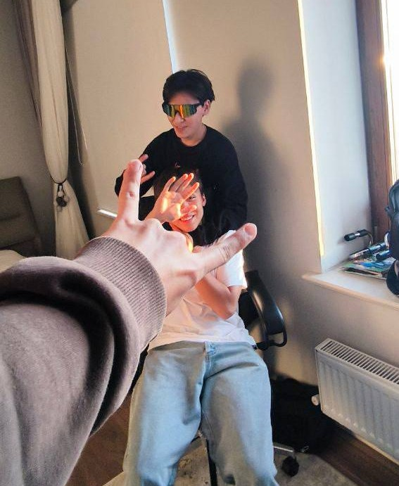
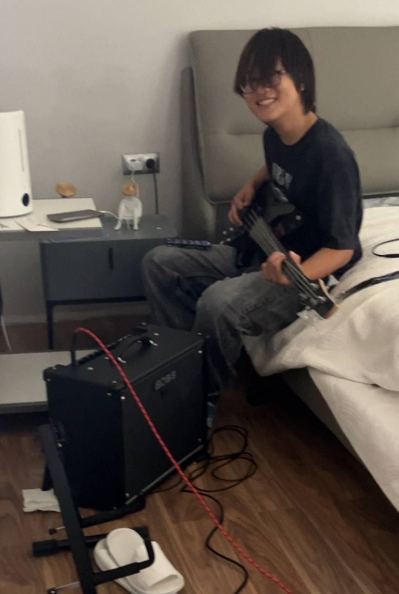
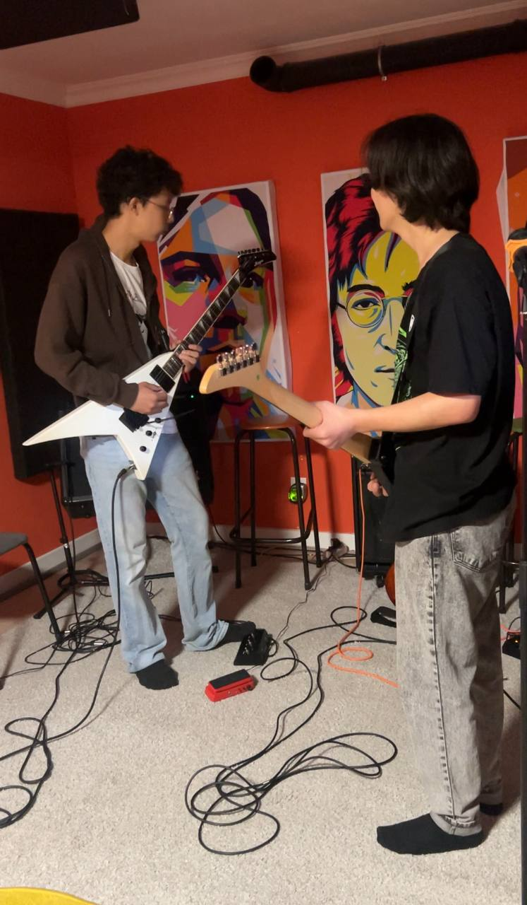
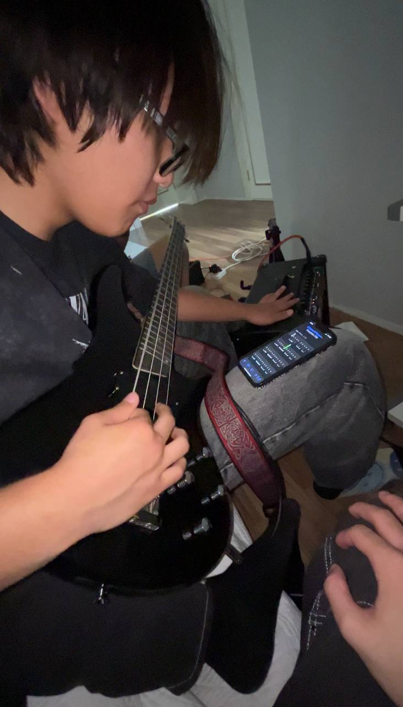
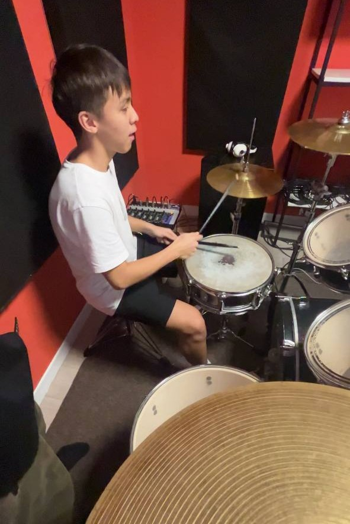
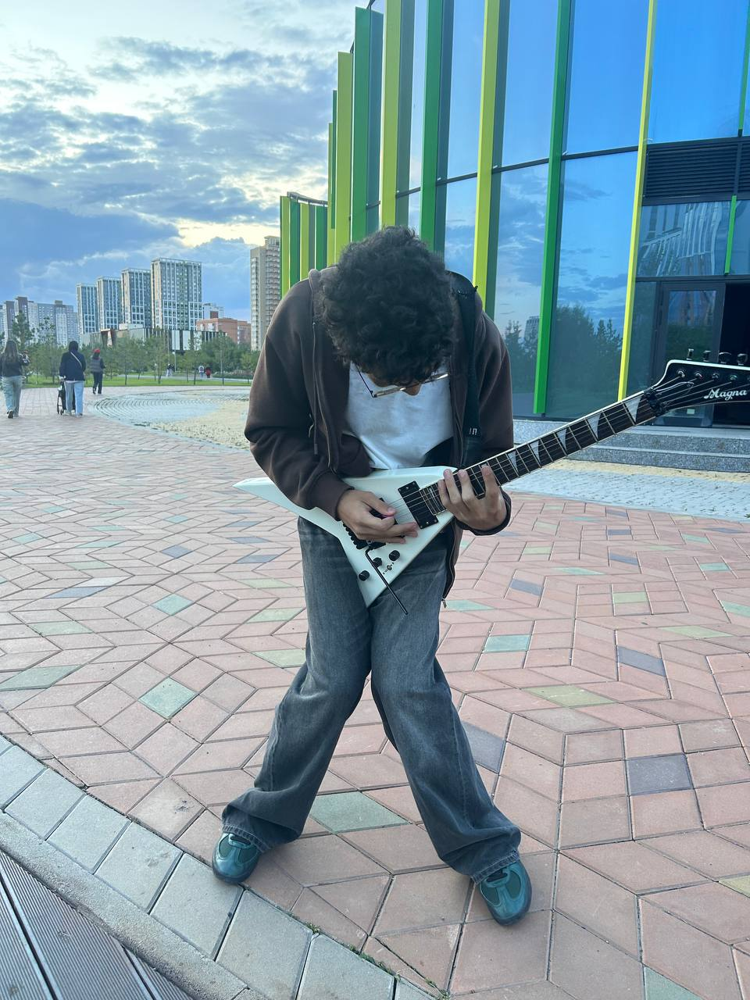

Будущее
Apofis стремится создавать качественные, уникальные песни и поднять казахстанский металл на новый уровень. Цель — внести разнообразие в сцену, продвигать дезмелодик и трэш-метал звучание, а также популяризировать собственный стиль.

Галерея

гитарист и барабанщик

басист играет на басухе

Репетиция группы (ритм-гитарист и соло-гитарист)

басист

барабанщик барабанит

соло-гитарист копирует рыжего демона (Dave Mustaine)